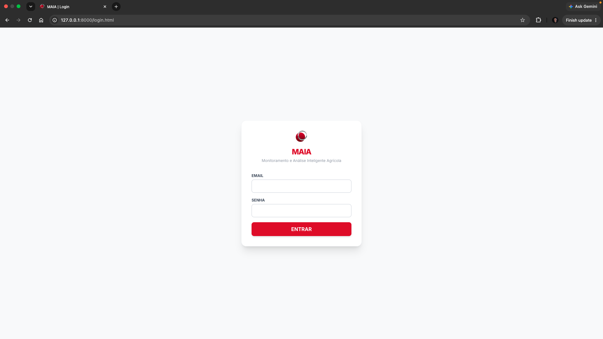
Acesso
Login unificado
Autenticação por papel, com token JWT emitido na entrada.
O MAIA cruza a telemetria do motor com o que o satélite enxerga no solo, para antecipar sinistros de equipamentos agrícolas antes que eles aconteçam em tempo real, com explicação e auditoria, para a carteira da Sompo Seguros.
Nenhuma decisão de risco nasce de uma fonte só. Dois motores independentes trabalham em paralelo um escuta o que a máquina sente por dentro, o outro observa o que o satélite vê por fora e se encontram em um único score, explicado e auditável.
Sete variáveis do barramento CAN (J1939) temperatura do óleo e do arrefecimento, pressão, torque, RPM, consumo e velocidade são lidas continuamente e avaliadas em conjunto por um Isolation Forest, normalizado por RobustScaler. O modelo não procura um limite fixo: ele aprende o padrão individual de cada máquina e sinaliza quando a combinação atual foge daquilo que é normal para ela o precursor estatístico de superaquecimento, desgaste mecânico ou risco de incêndio.
Enquanto isso, radar de satélite Sentinel-1 (SAR) processado no Google Earth Engine acompanha a umidade e o retroespalhamento do solo, cruzado com chuva acumulada da Open-Meteo e textura de solo da SoilGrids. Um PCA reduz essas variáveis a um espaço comparável ao histórico daquela coordenada exata, sinalizando solo instável, risco de atolamento ou proximidade crítica de água sem depender de nenhum sensor físico no terreno.
Cada score chega ao gestor já traduzido em fatores legíveis não um número isolado, mas o motivo por trás dele: qual variável pesou mais, e o quanto ela se afastou do padrão da máquina.
Toda decisão é encadeada matematicamente à anterior. Qualquer alteração retroativa quebra a cadeia de forma detectável a base da prova documental em disputa de sinistro.
Um alerta sozinho não previne sinistro o que previne é fechar o ciclo até a manutenção acontecer, e recalcular o risco depois dela.
Captura contínua do motor e da condição do solo.
Isolation Forest e PCA cruzam os dois sinais.
Explicado em linguagem natural, com o fator de risco.
Técnico externo registra o serviço sem precisar de login.
O sistema recalcula o risco assim que o reparo é concluído.
Sompo, gestor, operador e técnico enxergam o mesmo motor de risco — cada um na profundidade e na linguagem que o seu trabalho exige.

Autenticação por papel, com token JWT emitido na entrada.
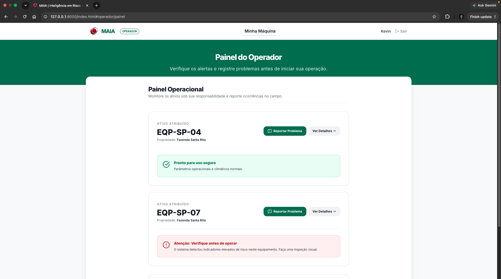
Lista dos ativos atribuídos, com status pronto-para-uso à frente.
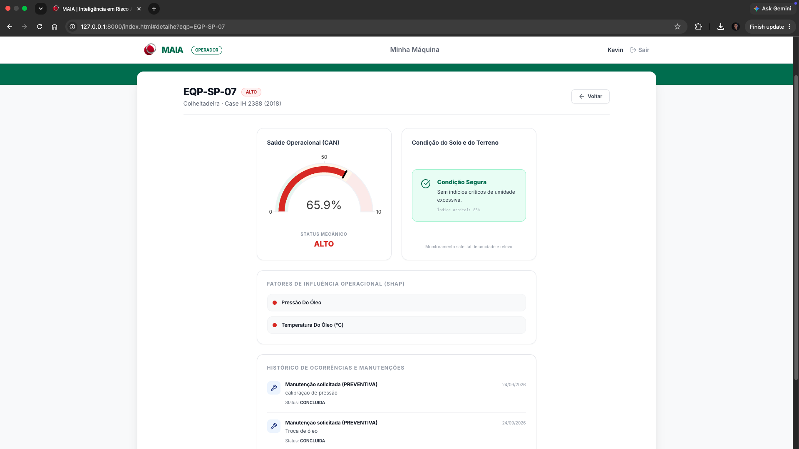
Gauge mecânico e condição do solo lado a lado, em linguagem simples.
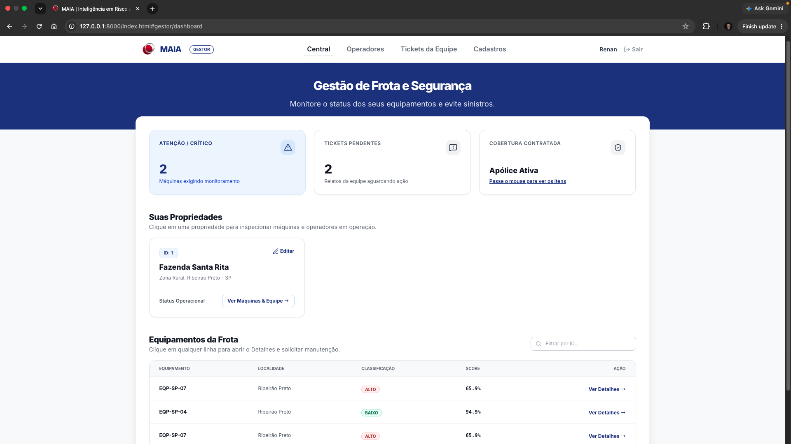
Visão consolidada das propriedades, máquinas e tickets pendentes.
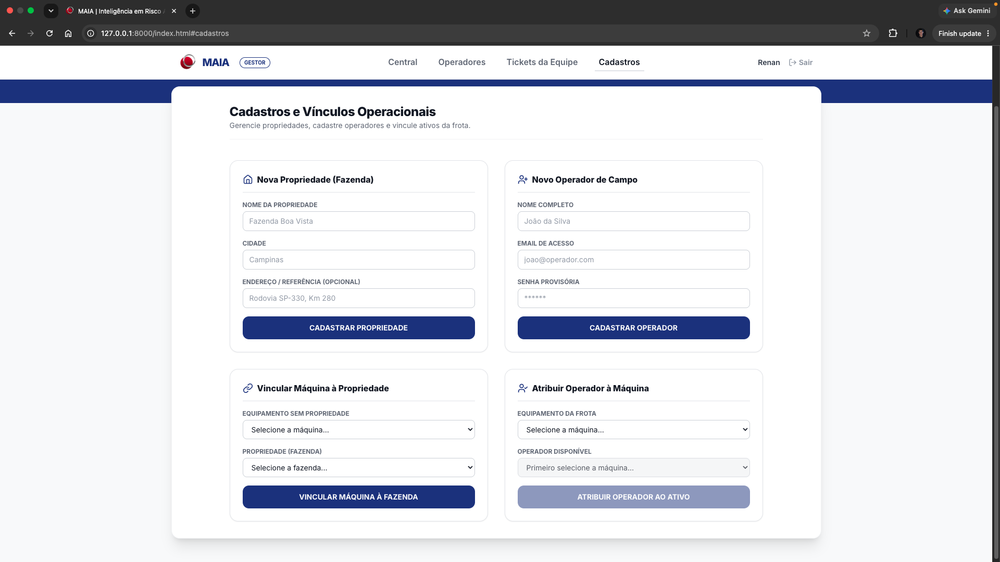
Onde o Gestor liga sensor, fazenda, máquina e operador.
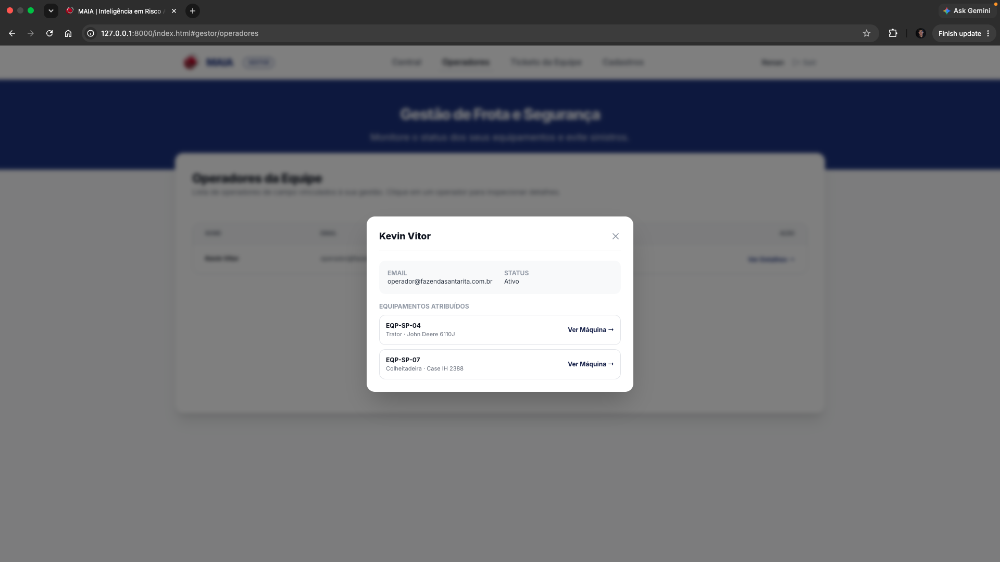
Detalhe do operador e dos equipamentos sob sua responsabilidade.
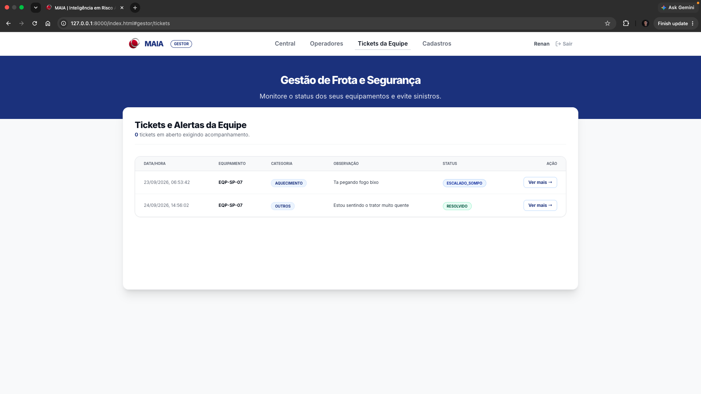
Ocorrências relatadas em campo, do alerta ao encerramento.
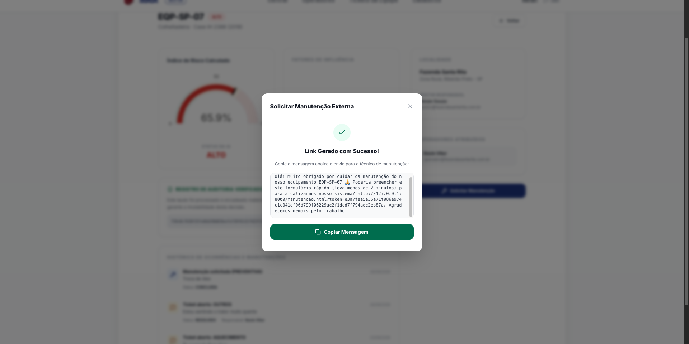
Link único gerado na hora, pronto para enviar ao técnico.
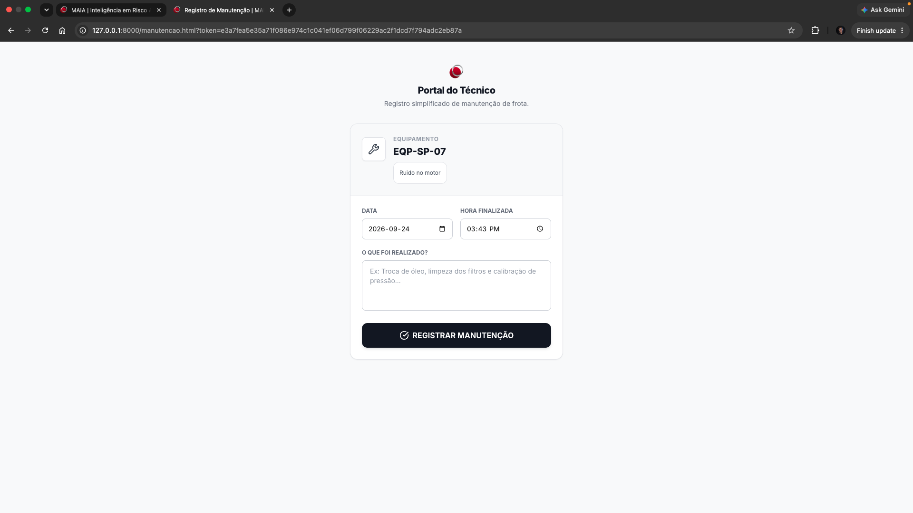
Formulário de manutenção acessado sem login, por token temporário.
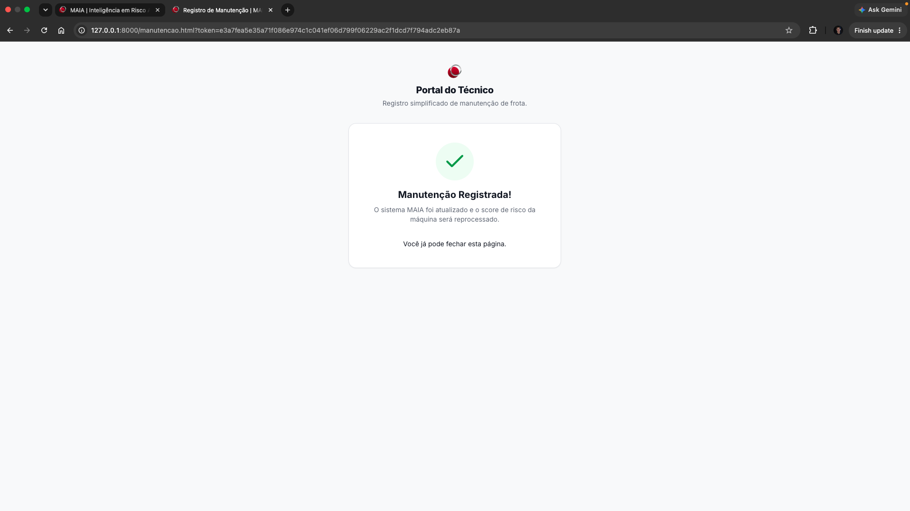
Confirmação que dispara o reprocessamento do score da máquina.
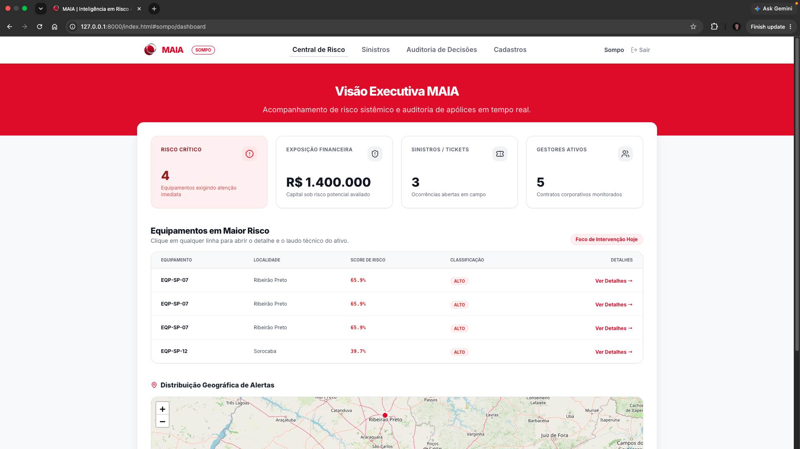
Exposição financeira e risco crítico da carteira, em tempo real.
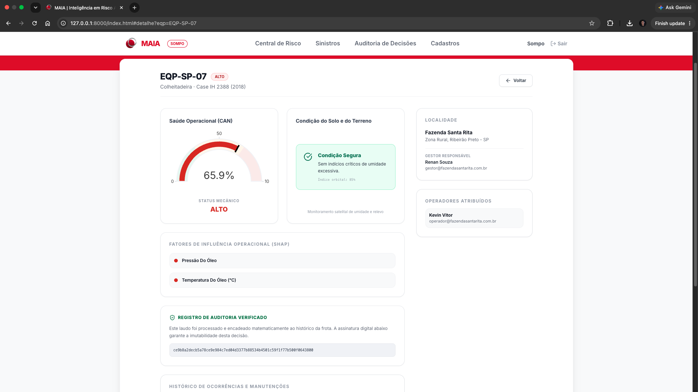
Mesmo laudo do operador, com o hash de auditoria em destaque.
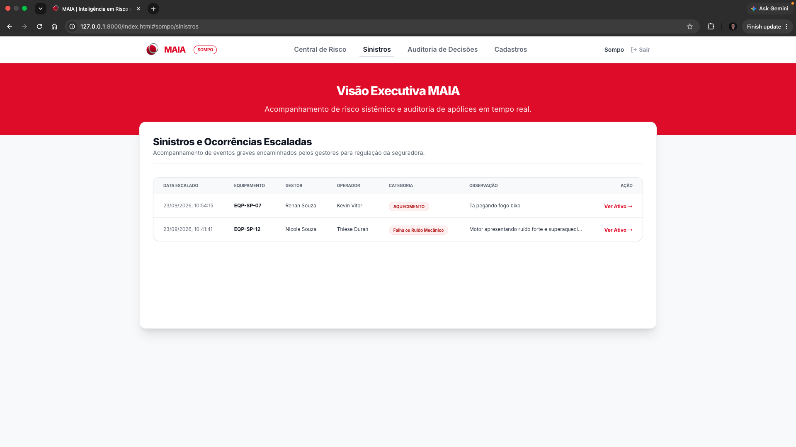
Ocorrências graves encaminhadas pelos gestores para regulação.
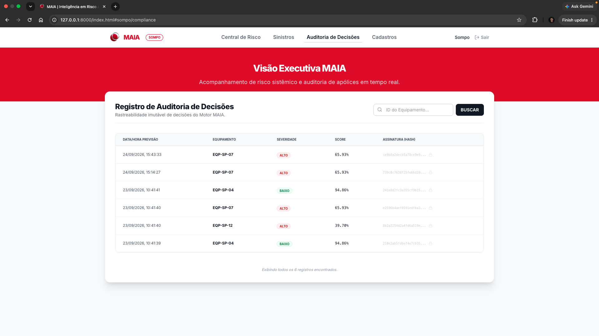
Cadeia de hash de cada score, verificável a qualquer momento.
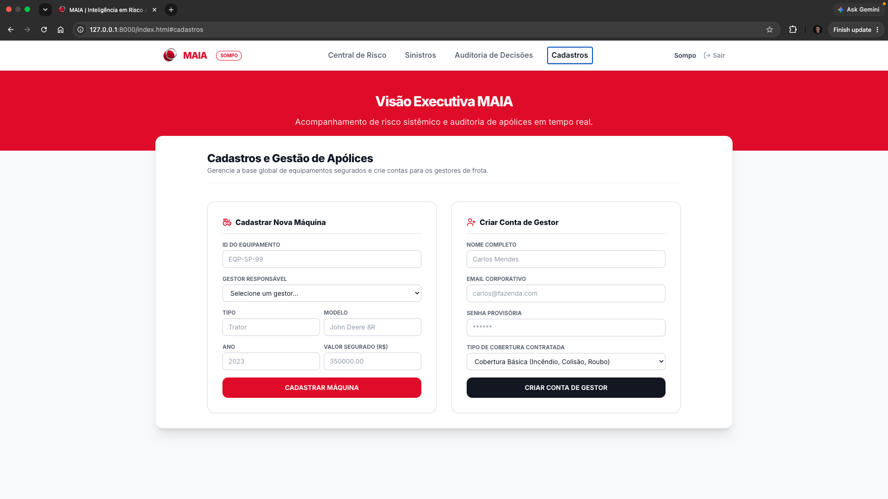
Base global de máquinas seguradas e contas de gestores.